Controlled low-speed motion
The geared stepper motor is suited to low-speed driving, starts and stops, and position-based motion on indoor mobile platforms.
For applications that need precise movementROBOT CHASSIS DRIVE WHEEL
A chassis drive unit for compact AGVs, UGVs, ROS rovers and educational platforms. DW69 combines a 69 mm rubber wheel, 6061 aluminum hub and mount, flange bearing and geared stepper motor in a module designed for straightforward mechanical integration.
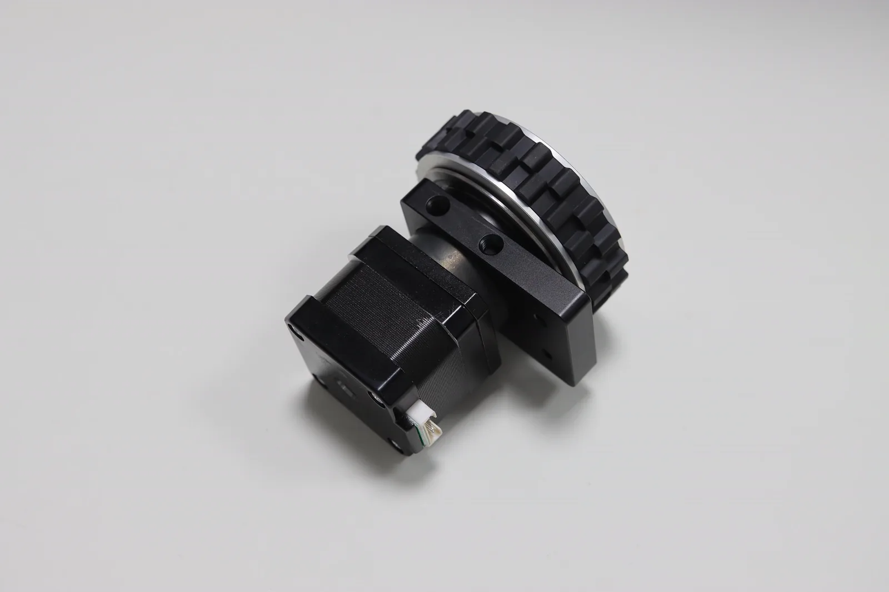
PRODUCT POSITIONING
DW69 supports several mounting arrangements and can be attached to sheet-metal parts or 20-series aluminum profiles. When paired with TTL Stepper Driver (A), low-level motor control stays on the driver and the application-side control program remains compact.
The geared stepper motor is suited to low-speed driving, starts and stops, and position-based motion on indoor mobile platforms.
For applications that need precise movementThe in-wheel flange bearing and aluminum mount form the load path, leaving the motor shaft to transmit torque.
Less external chassis support hardwareM6 threaded holes are provided on the side and M4 through-holes on the front, allowing the mounting direction to follow the chassis structure.
Works with sheet metal and profilesThe 15 mm-wide rubber tread provides traction for operation on smooth indoor floors.
Suitable for smooth surfacesEach module uses a driver with its own device ID. Multiple wheels and other bus devices can share one TTL bus.
One UART or USB connection can address up to 252 bus devicesTwo-wheel balancing, sheet-metal 4WD and aluminum-profile 4WD models are available for mechanical reference and further development.
Open STEP downloadsPRODUCT STRUCTURE
The hub and mounting base are made from 6061 aluminum. An in-wheel flange bearing carries the load while the geared stepper motor provides drive torque. Clearance holes in the outer hub give access to four motor screws, allowing the motor and cable exit direction to be reversed for left- or right-side installation.
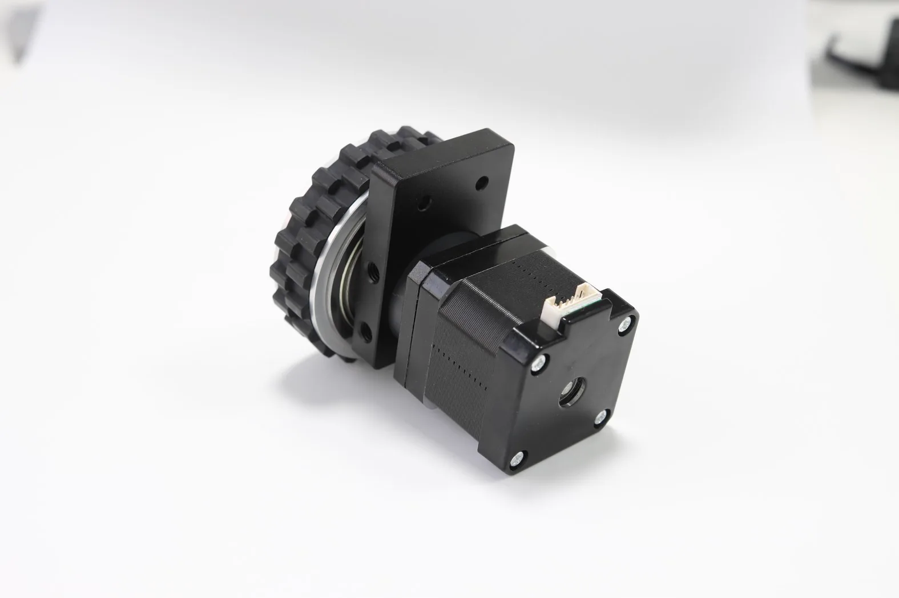
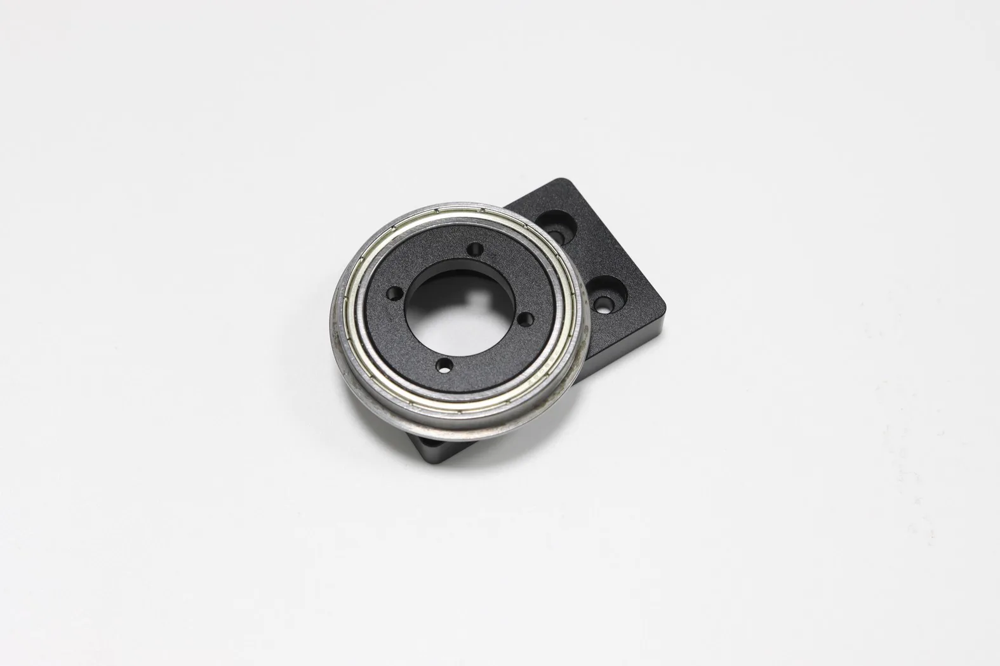
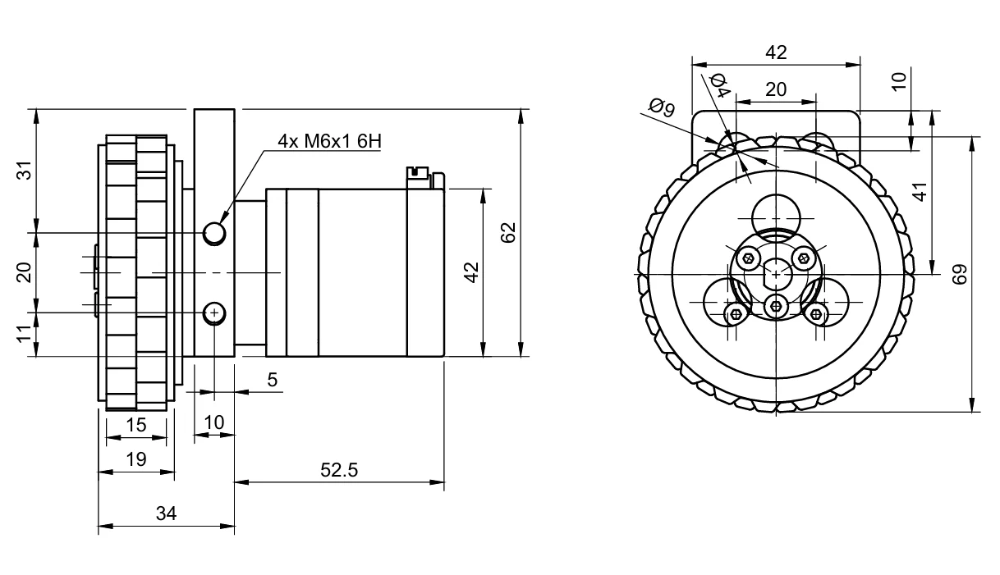
TTL BUS INTEGRATION
Each DW69 uses one TTL Stepper Driver (A). A PC, Raspberry Pi, Jetson, ESP32, STM32 or Arduino controller can connect through a TTL Adapter, while multiple drivers share power and communication through a hub.
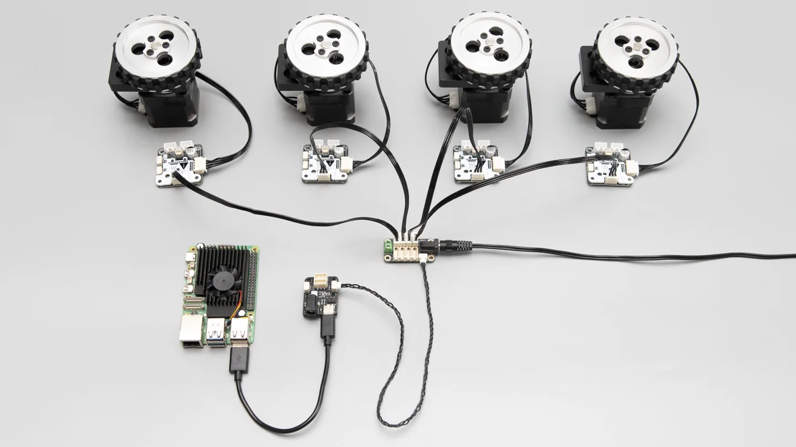
Connect each geared stepper motor to its TTL Stepper Driver (A), then connect a suitable DC 9–25.2 V, 6 A power supply.
Give every driver a unique device ID and confirm that the host can discover all devices on the bus.
Test left- and right-wheel direction, start-stop behavior and chassis movement at low speed before integrating the application controller.
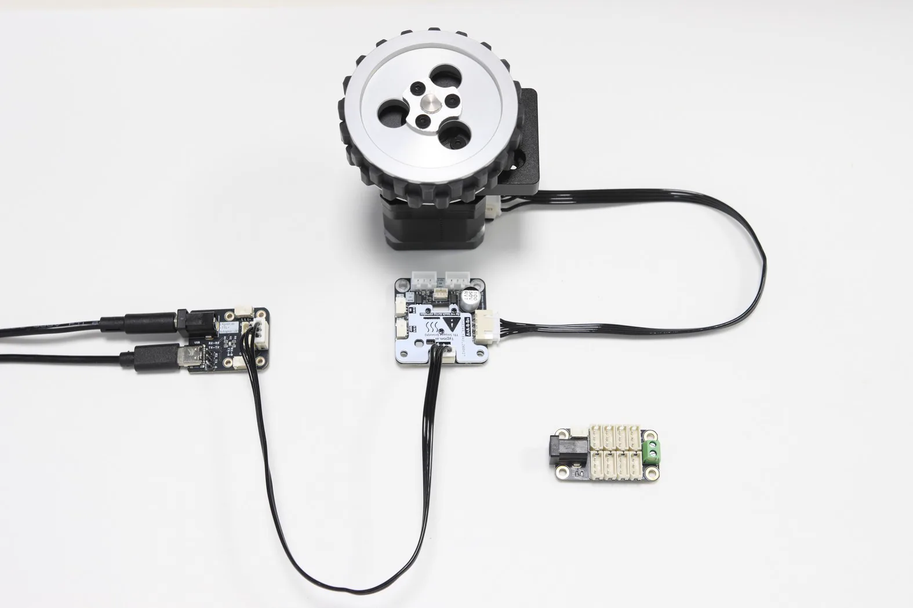
A PC or SBC can use the Python examples for discovery, configuration and motion control. ESP32, STM32 and Arduino controllers can connect through a supported single-wire TTL interface and use the C++ or Arduino examples.
Read the TTL Stepper Driver (A) WikiLYGION OPEN
These models show typical DW69 mounting arrangements. Download the STEP files from LYGION Open and adapt the structure to the dimensions of your battery, controller, sensors and enclosure.
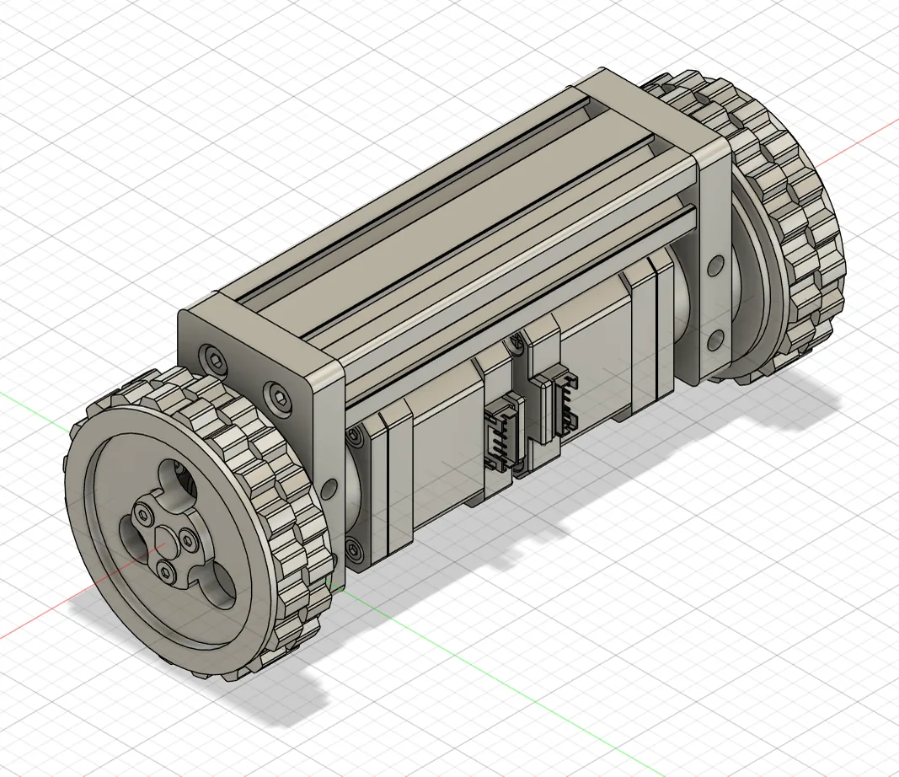
Two DW69 modules mount to opposite sides of a 2040 European-standard aluminum profile for balancing control, motion algorithms and teaching experiments.
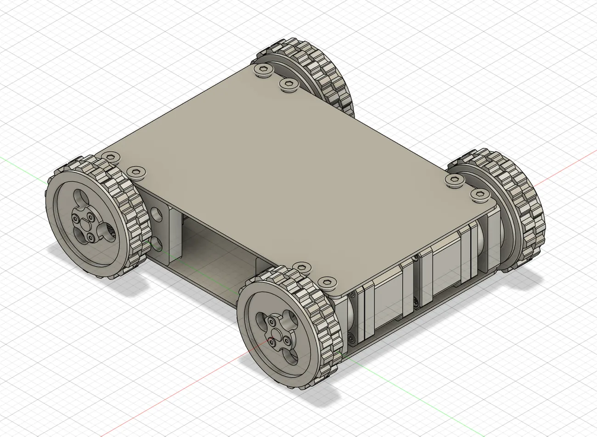
Four DW69 modules mount to a folded sheet-metal frame. The flat top surface can carry a battery, controller and sensors.
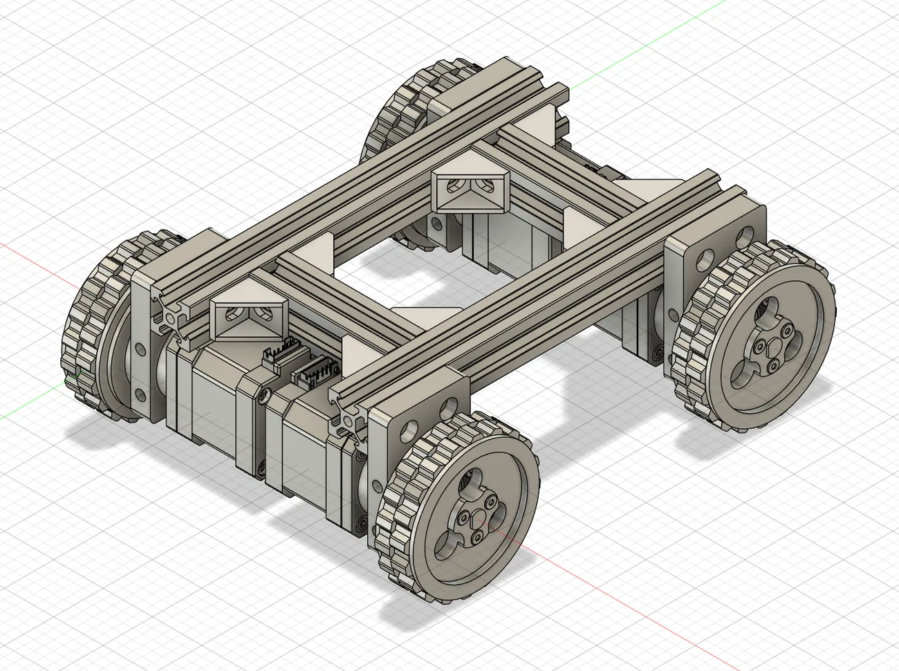
A frame made from 20-series aluminum profiles allows the wheelbase, track width and upper mounting structure to be adjusted.
STEP RESOURCES
The STEP files help check wheel clearance, wheelbase and track width before adding the controller, battery, sensors and enclosure. They are mechanical references; verify dimensions and assembly details before fabrication.
Open LYGION Open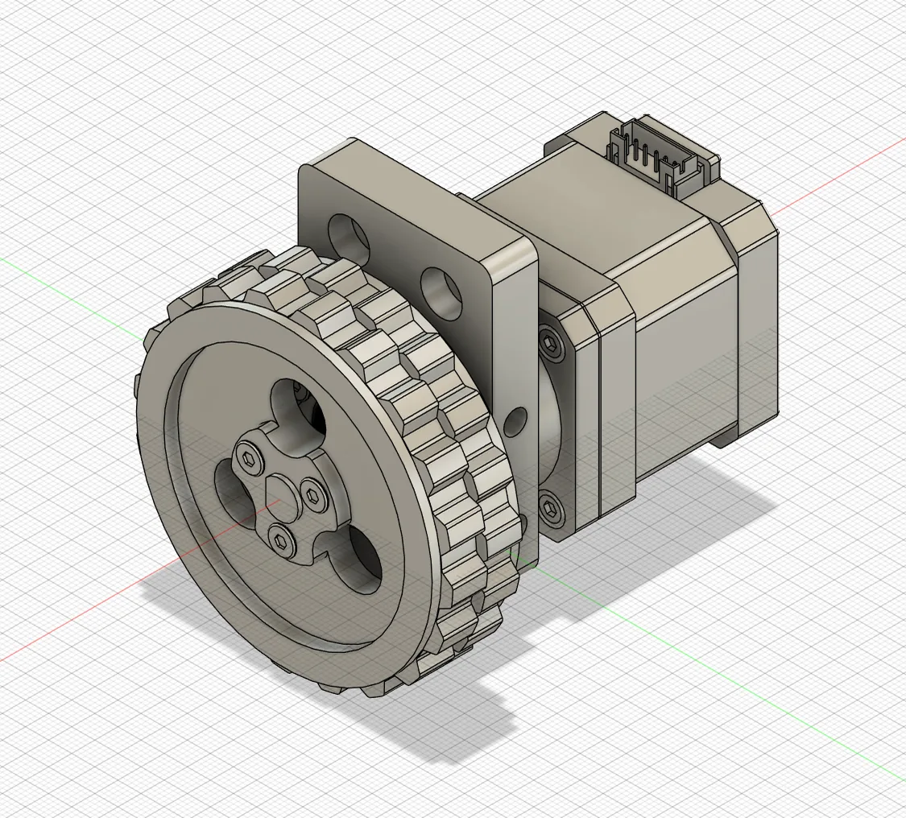
SPECIFICATIONS
PACKAGE OPTIONS
Choose the mechanical wheel assembly, motor version or TTL bus version according to the driver and control hardware already available in the project. Actual shipment contents follow the store listing.
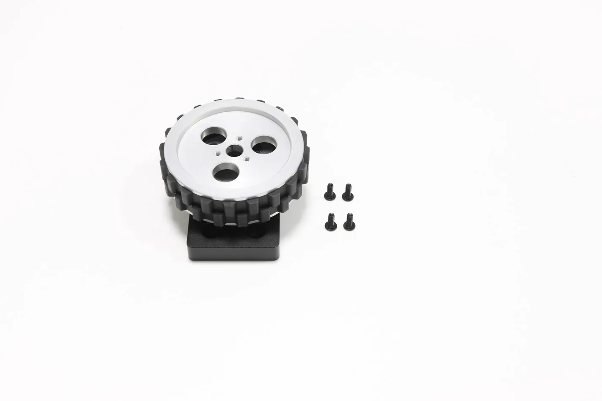
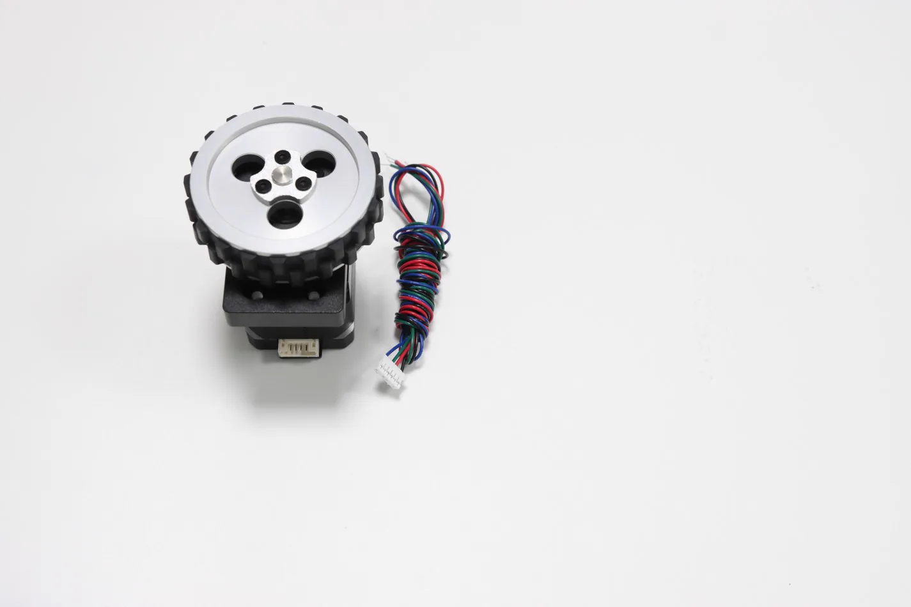
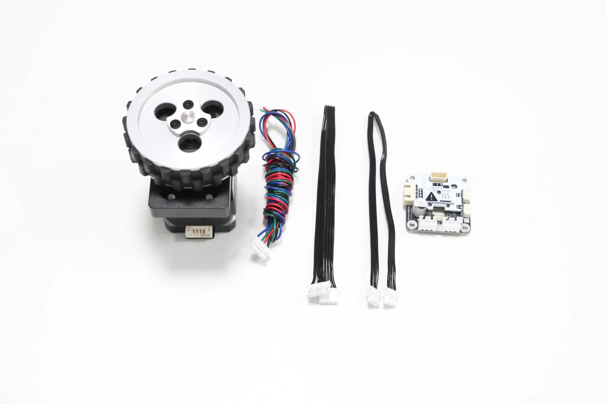
DOCUMENTATION
The driver Wiki covers wiring, device configuration and control examples. STEP models for DW69 and the three mobile chassis are available through LYGION Open.